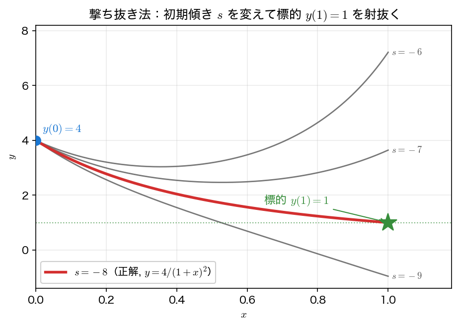

撃ち抜き法
境界値問題が初期値問題と違うのは、始点 \(x=a\) で傾き \(y'(a)\) が分からない点だけである。ならば傾きを仮に \(s\) と置いて初期値問題として前進積分し、終点 \(x=b\) で境界条件 \(y(b)=\beta\) が満たされるように \(s\) を調整すればよい。大砲の角度を変えて標的に当てるのに似ているので、この方法を撃ち抜き法（shooting method）と呼ぶ。
境界値問題を初期値問題に変える
2点境界値問題
を、初期傾き \(s\) をパラメータとする初期値問題
に置き換える。これを \(x=b\) まで積分して得た終端値を \(y(b; s)\) と書く。\(y(b;s)\) が目標の \(\beta\) に一致するように
を満たす \(s\) を求めれば、それが境界値問題の解になる。内側の初期値問題の積分には第4回のベクトル版 RK4を、外側の方程式 \(\phi(s)=0\) の求根には第2回のニュートン法の仲間である割線法を使う。撃ち抜き法は、積分と求根という2つの道具を組み合わせるだけで作れる。
線形の場合：反復は要らない
方程式が \(y\) と \(y'\) について線形なら、終端値 \(y(b;s)\) は初期傾き \(s\) の1次関数になる。これは線形方程式の解が初期条件に線形に依存するためである。したがって \(\phi(s)=y(b;s)-\beta\) も \(s\) の1次式となり、2つの傾き \(s_0,s_1\) で試し撃ちすれば、その2点を通る直線の根として正しい傾きが反復なしで決まる：
例題1 \(-y''=\pi^2\sin(\pi x)\), \(y(0)=y(1)=0\) で試そう。これは \(y''=-\pi^2\sin(\pi x)\) という線形方程式で、厳密な初期傾きは \(y'(0)=\pi\) である。\(s_0=0,\ s_1=1\) の2回の射撃と上の補間で、\(s^*=\pi\) が正確に再現されるはずである。
非線形の場合：割線法で求根
方程式が非線形だと \(\phi(s)\) も \(s\) について非線形になり、1回の補間では決まらない。そこで、第2回のニュートン法の導関数 \(\phi'(s_k)\) を直近2点の差分商 \(\bigl(\phi(s_k)-\phi(s_{k-1})\bigr)/(s_k-s_{k-1})\) で置き換えた割線法（secant method）を \(\phi(s)=0\) に適用する：
割線法はニュートン法と違って \(\phi'(s)\) を必要としない。撃ち抜き法では \(\phi'(s)=\partial y(b;s)/\partial s\) を求めるのに変分方程式をもう1本積分する必要があるため、導関数の要らない割線法が手軽である。
割線法は「挟み込む」方法ではない
割線法は直近の2点 \((s_{k-1},\phi_{k-1})\), \((s_k,\phi_k)\) を通る直線の零点を次の近似とする開放型（open method）で、根を挟む区間を維持しない。\(\phi_{k-1}\) と \(\phi_k\) が異符号である必要もなく、実際このあとのコードでは初期2点 \(s_0=-3,\ s_1=-6\) の残差が \(26.85\) と \(6.21\) でどちらも正である。単根の近くでの収束次数は \(p=(1+\sqrt5)/2\approx1.618\)（超1次だが2次ではない）。
第2回のはさみ打ち法は、名前と更新式は似ているが、符号の異なる2点を保持し続ける囲い込み法で、収束は1次である。混同しないこと。
例題2 \(y''=\tfrac32 y^2\), \(y(0)=4\), \(y(1)=1\) で試す。厳密解は \(y=4/(1+x)^2\)、初期傾きは \(y'(0)=-8\) である。下図のように、初期傾き \(s\) が浅い（\(-6,-7\)）と \(y''=\tfrac32 y^2>0\) の強い上向きの曲がりで終端が標的 \(y(1)=1\) を上に外し、急すぎる（\(-9\)）と下に外す。\(s=-8\) がちょうど標的を射抜く。

サンプルコード
線形撃ち抜き（例題1）と非線形撃ち抜き（例題2）を1本にまとめる。初期値問題の積分は状態ベクトル \(\mathbf s=(y, y')\) に作用するベクトル版 RK4である（独立変数は \(t\) でなく \(x\) と書く）。rk4_step の本体は第4回のベクトル版と同じで、2つの問題の右辺 rhs_lin・rhs_nl を切り替えられるように、右辺の関数を引数 rhs で受け取る点だけが違う。非線形側は割線法で初期傾きを更新し、反復ごとの \(\phi(s_k)\) を表示する。
#include <stdio.h>
#include <math.h>
static const double PI = 3.14159265358979323846;
/* 例題1（線形）: y'' = -pi^2 sin(pi x), 状態 s=(y, y') */
void rhs_lin(double x, const double s[2], double ds[2]) {
ds[0] = s[1];
ds[1] = -PI*PI*sin(PI*x);
}
/* 例題2（非線形）: y'' = (3/2) y^2 */
void rhs_nl(double x, const double s[2], double ds[2]) {
ds[0] = s[1];
ds[1] = 1.5*s[0]*s[0];
(void)x;
}
/* ベクトル版 RK4 の1ステップ（右辺の関数 rhs を引数で受け取る） */
void rk4_step(void (*rhs)(double, const double*, double*),
double t, double s[2], double h)
{
double k1[2], k2[2], k3[2], k4[2], tmp[2];
rhs(t, s, k1);
for (int i = 0; i < 2; i++) tmp[i] = s[i] + h/2.0*k1[i];
rhs(t + h/2.0, tmp, k2);
for (int i = 0; i < 2; i++) tmp[i] = s[i] + h/2.0*k2[i];
rhs(t + h/2.0, tmp, k3);
for (int i = 0; i < 2; i++) tmp[i] = s[i] + h*k3[i];
rhs(t + h, tmp, k4);
for (int i = 0; i < 2; i++)
s[i] += h/6.0*(k1[i] + 2.0*k2[i] + 2.0*k3[i] + k4[i]);
}
/* 初期値 (alpha, slope) で x=0->1 を積分し y(1) を返す。
fp != NULL なら軌道 (slope, x, y) を作図用に書き出す */
double shoot(void (*rhs)(double,const double*,double*),
double alpha, double slope, int N, FILE *fp) {
double h=1.0/N, x=0.0, s[2]={alpha, slope};
if (fp) fprintf(fp, "%.4f %.10e %.10e\n", slope, x, s[0]);
for (int i=0;i<N;i++){
rk4_step(rhs,x,s,h); x+=h;
if (fp) fprintf(fp, "%.4f %.10e %.10e\n", slope, x, s[0]);
}
return s[0];
}
int main(void){
int N=200;
/* ---- 線形撃ち抜き（例題1: -y''=pi^2 sin pi x, y(0)=y(1)=0）---- */
double a1=0.0, b1=0.0, s0=0.0, s1=1.0;
double phi0=shoot(rhs_lin,a1,s0,N,NULL)-b1;
double phi1=shoot(rhs_lin,a1,s1,N,NULL)-b1;
/* 1回の線形補間で厳密 */
double sstar=s0 - phi0*(s1-s0)/(phi1-phi0);
double yend=shoot(rhs_lin,a1,sstar,N,NULL)-b1;
printf("=== 線形撃ち抜き（例題1: -y''=pi^2 sin(pi x), y(0)=y(1)=0）===\n");
printf("試行 s=%.3f -> y(1)=%+.6f\n", s0, phi0+b1);
printf("試行 s=%.3f -> y(1)=%+.6f\n", s1, phi1+b1);
printf("線形補間した初期傾き s* = %.8f (厳密 pi = %.8f)\n", sstar, PI);
printf("その傾きでの y(1) = %+.3e (目標 0)\n\n", yend);
/* ---- 非線形撃ち抜き（例題2: y''=(3/2)y^2, y(0)=4, y(1)=1）---- */
double a2=4.0, b2=1.0;
printf("=== 非線形撃ち抜き（例題2: y''=(3/2)y^2, y(0)=4, y(1)=1）===\n");
printf(" 反復 k s_k phi(s_k)=y(1;s_k)-1\n");
/* 初期2点（割線法）。-3 は線形補間 (1-4)/1 */
double p0=-3.0, p1=-6.0;
double f0=shoot(rhs_nl,a2,p0,N,NULL)-b2;
double f1=shoot(rhs_nl,a2,p1,N,NULL)-b2;
printf(" %2d %15.8f %15.8f\n",0,p0,f0);
printf(" %2d %15.8f %15.8f\n",1,p1,f1);
double p1last=p1;
for(int k=2;k<=10;k++){
double p2=p1 - f1*(p1-p0)/(f1-f0);
double f2=shoot(rhs_nl,a2,p2,N,NULL)-b2;
printf(" %2d %15.8f %15.8f\n",k,p2,f2);
p0=p1; f0=f1; p1=p2; f1=f2; p1last=p2;
if(fabs(f2)<1e-12) break;
}
printf("\n収束した初期傾き s* = %.8f (厳密 -8)\n", p1last);
/* 作図用: 初期傾きを変えて撃った軌道を書き出す（1列目の s で区別する）*/
FILE *fp = fopen("shooting_geom.dat", "w");
if (fp == NULL) { perror("shooting_geom.dat"); return 1; }
fprintf(fp, "# s x y\n");
double slopes[] = {-6.0, -7.0, -8.0, -9.0};
for (int i=0;i<4;i++) shoot(rhs_nl, a2, slopes[i], N, fp);
fclose(fp);
return 0;
}
コンパイル・実行:
実行結果
=== 線形撃ち抜き（例題1: -y''=pi^2 sin(pi x), y(0)=y(1)=0）===
試行 s=0.000 -> y(1)=-3.141593
試行 s=1.000 -> y(1)=-2.141593
線形補間した初期傾き s* = 3.14159265 (厳密 pi = 3.14159265)
その傾きでの y(1) = -2.785e-15 (目標 0)
=== 非線形撃ち抜き（例題2: y''=(3/2)y^2, y(0)=4, y(1)=1）===
反復 k s_k phi(s_k)=y(1;s_k)-1
0 -3.00000000 26.85419370
1 -6.00000000 6.21491907
2 -6.90336301 2.94428521
3 -7.71658713 0.67083899
4 -7.95654990 0.09918365
5 -7.99818404 0.00411946
6 -7.99998819 0.00002678
7 -8.00000000 0.00000001
8 -8.00000000 0.00000000
収束した初期傾き s* = -8.00000000 (厳密 -8)
- 線形（例題1）：傾き \(s=0\) で撃つと \(y(1)=-3.14\)、\(s=1\) で \(y(1)=-2.14\)。\(\phi\) が \(s\) の1次式なので、この2点の補間だけで \(s^*=\pi\) が小数点以下8桁まで再現され、その傾きで撃つと \(y(1)=-2.8\times10^{-15}\)（実質ゼロ）。反復は不要である。
-
非線形（例題2）：\(\phi(s)\) が非線形なので割線法を反復する。初期傾きを線形補間の \(-3\) と \(-6\) から始めると（\(\phi\) はどちらも正で、根を挟んでいない）、\(\phi\) が \(26.9\to6.2\to2.9\to\cdots\) と減り、8反復で \(s^*=-8\) に収束する。\(k=4,5,6\) の終端のずれ \(\phi(s_k)\) は \(9.9\times10^{-2}\to4.1\times10^{-3}\to2.7\times10^{-5}\) と縮む。\(\lvert\phi_{k+1}\rvert\approx C\lvert\phi_k\rvert^p\) の対数をとり、隣どうしの差をとると \(C\) が消える。
\[ \log\lvert\phi_6\rvert-\log\lvert\phi_5\rvert \approx p\,\bigl(\log\lvert\phi_5\rvert-\log\lvert\phi_4\rvert\bigr) \]これを \(p\) について解くと
\[ p \approx \frac{\log\dfrac{2.7\times10^{-5}}{4.1\times10^{-3}}}{\log\dfrac{4.1\times10^{-3}}{9.9\times10^{-2}}} \approx 1.58 \]で、割線法の理論値 \(1.618\) に近い（2次ではない）。
可視化
shooting.c は最後に、初期傾き \(s=-6,-7,-8,-9\) で撃った軌道を shooting_geom.dat（1列目 \(s\)、2列目 \(x\)、3列目 \(y\)）に書き出す。標準出力は \(y(1)\) という1点の情報しか持たないが、軌道を丸ごと描けば「どう外したか」が見える。
import numpy as np
import matplotlib.pyplot as plt
d = np.loadtxt("shooting_geom.dat") # 列: s, x, y
fig, ax = plt.subplots(figsize=(7, 4.5))
for s in np.unique(d[:, 0]):
traj = d[d[:, 0] == s]
hit = abs(s + 8.0) < 1e-9 # s = -8 が標的を射抜く
ax.plot(traj[:, 1], traj[:, 2], lw=2.5 if hit else 1.2,
label=f"$s = {s:g}$" + (" (hit)" if hit else ""))
ax.plot(1.0, 1.0, "*", ms=16, color="green", zorder=5, label="target $y(1) = 1$")
ax.axhline(1.0, color="gray", ls=":", lw=1)
ax.set_xlabel("$x$")
ax.set_ylabel("$y$")
ax.set_title("shooting: the initial slope decides where you land")
ax.grid(alpha=0.3)
ax.legend()
fig.tight_layout()
fig.savefig("shooting_geom.png", dpi=150)
plt.show()
実行:
どの軌道も \(y(0)=4\) から出発するが、終端の高さは初期傾きに強く依存する。\(s=-6,-7\) は標的の上を、\(s=-9\) は下を通り、\(s=-8\) だけが星を射抜く。割線法はこの「終端のずれ \(\phi(s)\)」を \(0\) にする \(s\) を探している。
長所と限界
長所：
- 初期値問題ソルバ（RK4）と求根法（割線法）を組み合わせるだけで実装でき、高次精度の積分器をそのまま使えるので精度が高い（次ページの収束の図で、撃ち抜き法は RK4 由来の4次精度を示す）。
限界：
- 初期傾きのわずかな誤差が積分の途中で指数的に増幅する不安定な方程式では、\(\phi(s)\) が \(s\) に過敏になり、撃ち抜き法は破綻しやすい。区間が長いほど深刻になる。こうした問題では、次ページの有限差分法のように区間全体を一度に解く方法が頑健である。
まとめ
- 撃ち抜き法は、未知の初期傾き \(s\) を仮定して境界値問題を初期値問題に変え、終端の境界残差 \(\phi(s)=y(b;s)-\beta=0\) を求根で解く。
- 線形な問題では \(\phi(s)\) が1次式なので、2回の射撃と補間で反復なしに解ける（例題1で \(s^*=\pi\)）。
- 非線形な問題では割線法・ニュートン法で \(\phi(s)=0\) を反復的に解く（例題2で \(s^*=-8\) に8反復）。
- 内側は第4回の RK4、外側はニュートン法の導関数を差分商で置き換えた割線法——積分と求根の組み合わせである。